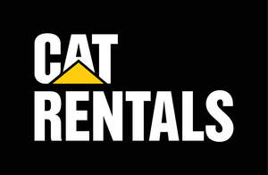

Trade Mark Journal No.2025/040 3 October 2025
UK00004264074 15 September 2025 (7,12,35,37,39,40,44)

- Class 7
- Machines for use in agriculture, compaction, construction, cleaning, defence, demolition, earth conditioning, earth contouring, earth moving, forestry, landscaping, lifting, marine propulsion, material handling, material scrapping, mining, mulching, oil and gas distribution, oil and gas exploration and oil and gas production, quarrying, paving, pipelaying, power generation, road building and repair, site preparation and remediation, transportation, vegetation management, waste management, air and space exploration; machine tools; power tools; motors, other than for land vehicles; engines, other than for land vehicles; machine coupling and transmission components, except for land vehicles, and parts therefor; electricity generators; electric power generators; parts, fittings and components for all the aforesaid goods.
- Class 12
- Vehicles; apparatus for locomotion by land; land vehicles for use in agriculture, compaction, construction, cleaning, defence, demolition, earth conditioning, earth contouring, earth moving, forestry, landscaping, lifting, marine propulsion, material handling, material scrapping, mining, mulching, oil and gas distribution, oil and gas exploration and oil and gas production, quarrying, paving, pipelaying, power generation, road building and repair, site preparation and remediation, transportation, vegetation management, waste management, air and space exploration; motors and engines for land vehicles; trucks; loaders [fork-lift trucks]; forklift trucks; dumper trucks; tractors; trailers [vehicles]; parts, fittings and components for all the aforesaid goods.
- Class 35
- Retail services in relation to vehicles, equipment, machinery and machine tools for use in earth moving, earth conditioning, material handling, construction, mining, paving, agriculture, and forestry, and parts therefor; retail services in relation to vehicles; retail services in relation to construction equipment; retail services in relation to hand-operated tools for construction; retail services in relation to agricultural equipment; retail services in relation to engines and power generation equipment, and parts therefor; online retail services in relation to parts for vehicles, equipment, and machinery for use in earth moving, earth conditioning, material handling, construction, mining, paving, agriculture, and forestry; online retail services in relation to parts for engines and power generation equipment; retail services in the field of construction equipment, mining equipment and generators; retail services in relation to machine tools; retail services in relation to industrial oils, greases and lubricants; retail services in relation to clothing, footwear, headwear, toys, bags, watches, eyewear and printed matter; arranging and conducting auctions; on-line auction services; providing a searchable database, via the internet, of used construction, mining, material handling, agricultural, paving, and forestry machinery for sale or rent.
- Class 37
- Rental of construction and mining equipment; rental of equipment, namely machines and machine tools for use in compaction, construction, cleaning, defence, demolition, earth conditioning, earth contouring, earth moving, landscaping, lifting, marine propulsion, material handling, material scrapping, mining, mulching, oil and gas exploration; rental of equipment, namely machines and machine tools for use in quarrying, paving, pipelaying, road building and repair, site preparation and remediation, transportation, air and space exploration; vehicle battery charging; charging of electric vehicles; charging of batteries and power storage devices, and rental of equipment therefore; rental of bulldozers; rental of excavators; rental of earth moving equipment and excavators; rental of construction equipment; rental of light towers for use in construction; rental of construction machines and apparatus; rental of machines, tools and apparatus for building construction; rental of building equipment; rental of lifting apparatus; rental of battery chargers; rental of drilling and mining apparatus; rental of mining machines and apparatus; rental of cranes [construction equipment]; rental of drainage pumps; rental of concrete pumps; rental of concrete mixers; rental of aerial work platforms for use in construction; rental of cleaning and washing machines and equipment; rental of road sweeping machines; rental of air compressors; rental of electric signboards; rental of variable message boards; Providing information relating to the rental of construction machines and apparatus; Providing information relating to the repair or maintenance of construction machines and apparatus; Providing information relating to the rental of mining machines and apparatus; Providing information relating to the repair or maintenance of mining machines and apparatus; pump repair or maintenance; machinery repair; repair of mining machinery; maintenance of industrial machinery; machinery installation, maintenance and repair; maintenance and repair of engines; Maintenance, servicing and repair of power generating apparatus and installations; Providing information relating to the repair or maintenance of power generators; maintenance and repair of gas turbines; maintenance and repair of land vehicles; maintenance and cleaning of mining equipment; Repair or maintenance of construction machines and apparatus; repair or maintenance of building equipment; Repair or maintenance of mining machines and apparatus; Repair or maintenance of agricultural machines and implements; Maintenance and repair of road making machines; Maintenance and repair of earth moving machines.
- Class 39
- Rental of industrial vehicles; rental of lifting equipment, machines and machine tools for use in loading and unloading; rental of equipment, machines and machine tools for use in oil and gas distribution; truck and trailer rental; rental of lorries; rental of trolleys; rental of tractors; rental of storage containers; rental of motor land vehicles; rental of transport vehicles; rental of pallets and containers for transport of goods; rental of pallets and containers for storage of goods; rental of loading-unloading machines and apparatus; rental of navigational systems; rental of fork-lift trucks; rental of motorized golf carts; rental of equipment for traffic control.
- Class 40
- Rental of power-generating equipment; rental of equipment, machines and machine tools for use in oil and gas production; rental of electricity generators; rental of electric power generators; rental of air-conditioning apparatus; rental of heating apparatus; rental of waste compacting machines and apparatus; rental of waste crushing machines and apparatus; rental of batteries; rental of welding apparatus; rental of machines and apparatus for lumbering; providing information relating to the rental of waste crushing machines and apparatus; providing information relating to the rental of waste compacting machines and apparatus; providing information relating to the rental of waste crushing machines and apparatus.
- Class 44
- Rental of equipment and machinery for use in agriculture and forestry; rental of equipment, machines, and machine tools for use in agriculture, forestry, landscaping, mulching, and vegetation management; rental of portable toilets; rental of landscaping equipment and apparatus; rental of farming equipment; rental of agricultural machinery; rental of agricultural equipment; rental of agricultural implements; providing information relating to farming equipment rental; providing information about agriculture, horticulture, and forestry services.
Caterpillar Inc.
Representative: Hogan Lovells International LLP